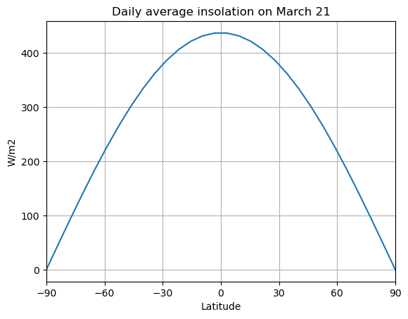
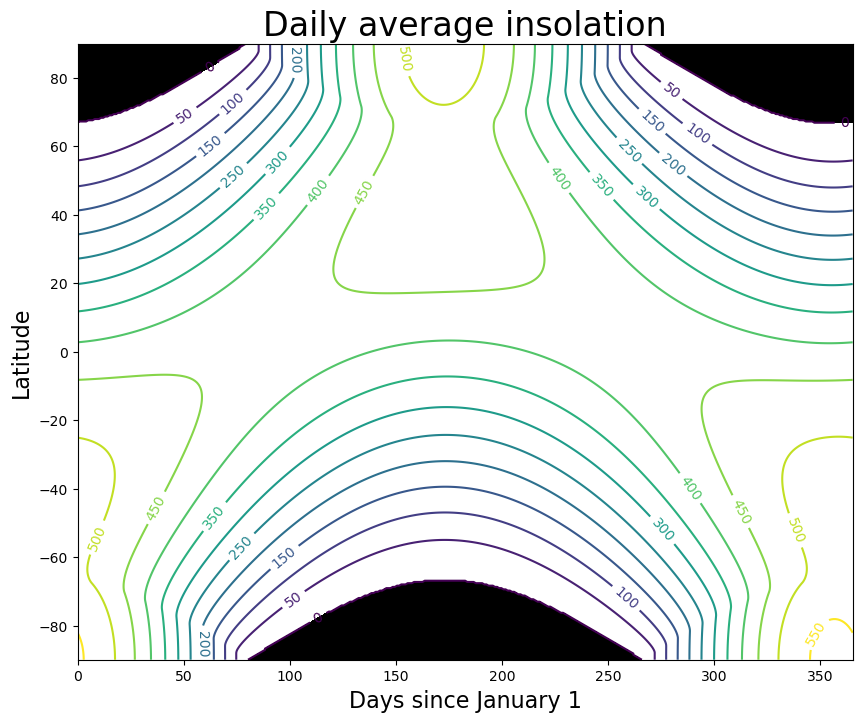
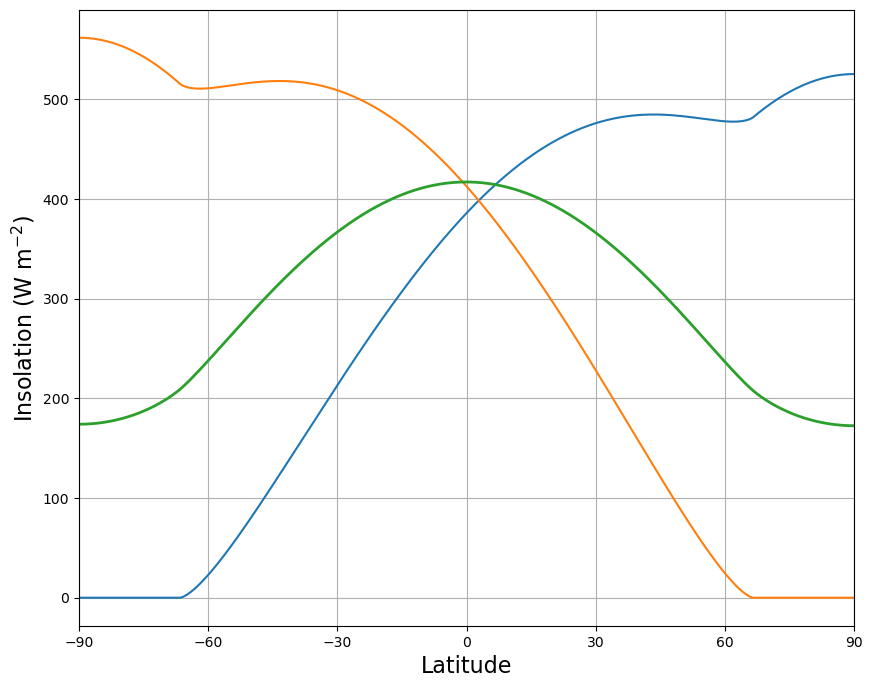

Insolation#
This notebook is adapted from the excellent The Climate Laboratory by Brian E. J. Rose, University at Albany. The notebook closely follows section 2.7 of Dennis L. Hartmann, “Global Physical Climatology”, Academic Press 1994.*
1. Distribution of insolation#
The amount of solar radiation incident on the top of the atmosphere (what we call the “insolation”) depends on
latitude
season
time of day
This insolation is the primary driver of the climate system. Here we will examine the geometric factors that determine insolation, focussing primarily on the daily average values.
Instantaneous solar flux#
We can write the solar flux per unit surface area as
where \(\overline{r_s}\) is the mean distance for which the flux density \(S_0\) (i.e. the solar constant) is measured, and \(r_s\) is the actual distance from the sun at time \(t\).
Question:#
what factors determine \(\left( \frac{\overline{r_s}}{r_s} \right)^2\) and under what circumstances would this ratio always equal 1?
Reminders:
Solar zenith angle#
We define the solar zenith angle \(\theta_s\) as the angle between the local normal to Earth’s surface and a line between a point on Earth’s surface and the sun.

From the above figure (reproduced from Hartmann’s Global Climatology), the ratio of the shadow area to the surface area is equal to the cosine of the solar zenith angle.
The Earth’s orbit around the Sun traces out an ellipse, with the Sun at one focal point.

Calculating the zenith angle#
Just like the flux itself, the solar zenith angle depends latitude, season, and time of day.
Declination angle#
The seasonal dependence can be expressed in terms of the declination angle of the sun: the latitude of the point on the surface of Earth directly under the sun at noon (denoted by \(\delta\)).
\(\delta\) currently varies between +23.45º at northern summer solstice (June 21) to -23.45º at northern winter solstice (Dec. 21), as seen in the following schematic from jones 1995.
Hour angle#
The hour angle \(h\) is defined as the longitude of the subsolar point relative to its position at noon, illustrated by the orange arrow in this diagram from Wikipedia

Formula for zenith angle#
With these definitions and some spherical geometry (see Appendix A of Hartmann’s book), we can express the solar zenith angle for any latitude \(\phi\), declination angle \(\delta\) (i.e. season), and hour angle \(h\) (i.e. time of day) as
Sunrise and sunset#
If \(\cos\theta_s < 0\) then the sun is below the horizon and the insolation is zero (i.e. it’s night time!)
Sunrise and sunset occur when the solar zenith angle is 90º and thus \(\cos\theta_s=0\). The above formula then gives
where \(h_0\) is the hour angle at sunrise and sunset.
Polar night#
Near the poles special conditions prevail. Latitudes poleward of 90º-\(\delta\) are constantly illuminated in summer, when \(\phi\) and \(\delta\) are of the same sign. Right at the pole there is 6 months of perpetual daylight in which the sun moves around the compass at a constant angle \(\delta\) above the horizon.
In the winter, \(\phi\) and \(\delta\) are of opposite sign, and latitudes poleward of 90º-\(|\delta|\) are in perpetual darkness. At the poles, six months of daylight alternate with six months of daylight.
At the equator day and night are both 12 hours long throughout the year.
Daily average insolation#
Substituting the expression for solar zenith angle into the insolation formula gives the instantaneous insolation as a function of latitude, season, and time of day:
which is valid only during daylight hours, \(|h| < h_0\), and \(Q=0\) otherwise (night).
To get the daily average insolation, we integrate this expression between sunrise and sunset and divide by 24 hours (or \(2\pi\) radians since we express the time of day in terms of hour angle):
which is easily integrated to get our formula for daily average insolation:
where the hour angle at sunrise/sunset \(h_0\) is in radians.
The daily average zenith angle#
It turns out that, due to optical properties of the Earth’s surface (particularly bodies of water), the surface albedo depends on the solar zenith angle. It is therefore useful to consider the average solar zenith angle during daylight hours as a function of latidude and season.
The appropriate daily average here is weighted with respect to the insolation, rather than weighted by time. The formula is

The average zenith angle is much higher at the poles than in the tropics. This contributes to the very high surface albedos observed at high latitudes.
2. Computing daily insolation with climlab#
Here are some examples calculating daily average insolation at different locations and times.
These all use a function called
daily_insolation
in the package
climlab.solar.insolation
to do the calculation. The code implements the above formulas to calculates daily average insolation anywhere on Earth at any time of year.
The code takes account of orbital parameters to calculate current Sun-Earth distance.
We can look up past orbital variations to compute their effects on insolation using the package
climlab.solar.orbital
See the [next lecture](./Lecture14 – Orbital variations.ipynb)!
Using the daily_insolation function#
#%pip install wheel
#%pip install netCDF4
%matplotlib inline
import numpy as np
import matplotlib.pyplot as plt
from climlab import constants as const
from climlab.solar.insolation import daily_insolation
First, get a little help on using the daily_insolation function:
help(daily_insolation)
Help on function daily_insolation in module climlab.solar.insolation:
daily_insolation(lat, day, orb={'ecc': 0.017236, 'long_peri': 281.37, 'obliquity': 23.446}, S0=1365.2, day_type=1, days_per_year=365.2422)
Compute daily average insolation given latitude, time of year and orbital parameters.
Orbital parameters can be interpolated to any time in the last 5 Myears with
``climlab.solar.orbital.OrbitalTable`` (see example above).
Longer orbital tables are available with ``climlab.solar.orbital.LongOrbitalTable``
Inputs can be scalar, ``numpy.ndarray``, or ``xarray.DataArray``.
The return value will be ``numpy.ndarray`` if **all** the inputs are ``numpy``.
Otherwise ``xarray.DataArray``.
**Function-call argument**
:param array lat: Latitude in degrees (-90 to 90).
:param array day: Indicator of time of year. See argument ``day_type``
for details about format.
:param dict orb: a dictionary with three members (as provided by
``climlab.solar.orbital.OrbitalTable``)
* ``'ecc'`` - eccentricity
* unit: dimensionless
* default value: ``0.017236``
* ``'long_peri'`` - longitude of perihelion (precession angle)
* unit: degrees
* default value: ``281.37``
* ``'obliquity'`` - obliquity angle
* unit: degrees
* default value: ``23.446``
:param float S0: solar constant
- unit: :math:`\textrm{W}/\textrm{m}^2`
- default value: ``1365.2``
:param int day_type: Convention for specifying time of year (+/- 1,2) [optional].
*day_type=1* (default):
day input is calendar day (1-365.24), where day 1
is January first. The calendar is referenced to the
vernal equinox which always occurs at day 80.
*day_type=2:*
day input is solar longitude (0-360 degrees). Solar
longitude is the angle of the Earth's orbit measured from spring
equinox (21 March). Note that calendar days and solar longitude are
not linearly related because, by Kepler's Second Law, Earth's
angular velocity varies according to its distance from the sun.
:raises: :exc:`ValueError`
if day_type is neither 1 nor 2
:returns: Daily average solar radiation in unit
:math:`\textrm{W}/\textrm{m}^2`.
Dimensions of output are ``(lat.size, day.size, ecc.size)``
:rtype: array
Code is fully vectorized to handle array input for all arguments.
Orbital arguments should all have the same sizes.
This is automatic if computed from
:func:`~climlab.solar.orbital.OrbitalTable.lookup_parameters`
For more information about computation of solar insolation see the
:ref:`Tutorial` chapter.
Here are a few simple examples.
First, compute the daily average insolation at 45ºN on January 1:
daily_insolation(45,1)
123.95321551807459
Same location, July 1:
daily_insolation(45,181)
482.356497522712
We could give an array of values. Let’s calculate and plot insolation at all latitudes on the spring equinox = March 21 = Day 80
lat = np.linspace(-90., 90., 30)
Q = daily_insolation(lat, 80)
fig, ax = plt.subplots()
ax.plot(lat,Q)
ax.set_xlim(-90,90); ax.set_xticks([-90,-60,-30,-0,30,60,90])
ax.set_xlabel('Latitude')
ax.set_ylabel('W/m2')
ax.grid()
ax.set_title('Daily average insolation on March 21')
Text(0.5, 1.0, 'Daily average insolation on March 21')

exercises#
Try to answer the following questions before reading the rest of these notes.
What is the daily insolation today here at Trieste (latitude 45.65ºN)?
What is the annual mean insolation at the latitude of Trieste?
At what latitude and at what time of year does the maximum daily insolation occur?
What latitude is experiencing either polar sunrise or polar sunset today?
3. Global, seasonal distribution of insolation (present-day orbital parameters)#
Calculate an array of insolation over the year and all latitudes (for present-day orbital parameters). We’ll use a dense grid in order to make a nice contour plot
lat = np.linspace( -90., 90., 500)
days = np.linspace(0, const.days_per_year, 365 )
Q = daily_insolation( lat, days )
And make a contour plot of Q as function of latitude and time of year.
fig, ax = plt.subplots(figsize=(10,8))
CS = ax.contour( days, lat, Q , levels = np.arange(0., 600., 50.) )
ax.clabel(CS, CS.levels, inline=True, fontsize=10)
ax.set_xlabel('Days since January 1', fontsize=16 )
ax.set_ylabel('Latitude', fontsize=16 )
ax.set_title('Daily average insolation', fontsize=24 )
ax.contourf ( days, lat, Q, levels=[-1000., 0.], colors='k' )
<matplotlib.contour.QuadContourSet at 0x17d106010>

Time and space averages#
Take the area-weighted global, annual average of Q…
Qaverage = np.average(np.mean(Q, axis=1), weights=np.cos(np.deg2rad(lat)))
print( 'The annual, global average insolation is %.2f W/m2.' %Qaverage)
The annual, global average insolation is 341.38 W/m2.
Also plot the zonally averaged insolation at a few different times of the year:
summer_solstice = 170
winter_solstice = 353
fig, ax = plt.subplots(figsize=(10,8))
ax.plot( lat, Q[:,(summer_solstice, winter_solstice)] );
ax.plot( lat, np.mean(Q, axis=1), linewidth=2 )
ax.set_xbound(-90, 90)
ax.set_xticks( range(-90,100,30) )
ax.set_xlabel('Latitude', fontsize=16 );
ax.set_ylabel('Insolation (W m$^{-2}$)', fontsize=16 );
ax.grid()

Credits#
This notebook was adapted (with permission and huge thanks!) from the excellent and highly recommended Climate Laboratory, an open-source textbook developed and maintained by Brian E. J. Rose, University at Albany.
Brian’s original book is licensed for free and open consumption under the Creative Commons Attribution 4.0 International (CC BY 4.0) license. Development of the original notes and the climlab software is partially supported by the National Science Foundation under award AGS-1455071 to Brian Rose.